Kilde: The free lunch is over - Herb Sutter
Kilde: The free lunch is over - Herb Sutter
Parallelisation is key!
Our old tools don't cut it
- Threads (programmed directly)
- high memory overhead
- starting/stopping is expensive
- inter-thread communication entirely left to the user
- Locks/Mutexes/Semaphores/`synchronized`/`volatile`
- too little sync: race conditions, wrong results
- too much sync: deadlocks, poor performance
- very hard to use correctly
Too low-level!
Selected concurrency abstractions
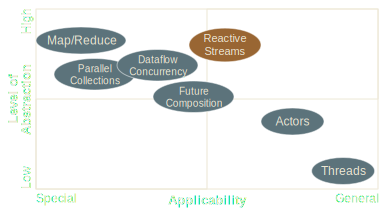 Kilde: Reactive Manifesto
Kilde: Reactive ManifestoExample: Scaling Logic
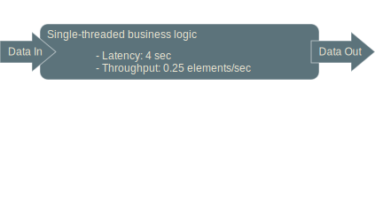 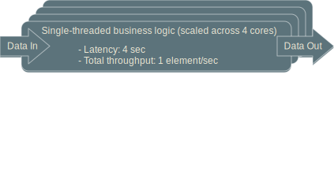 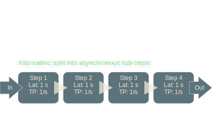 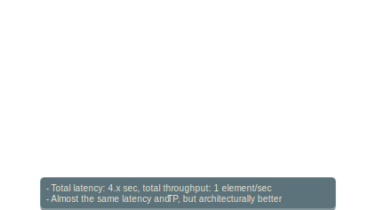 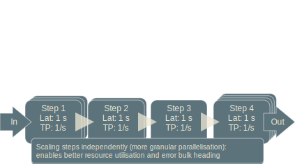Simple stream example
import java.util.stream.*
final Stream<Integer> s = Stream.of(1,2,3);
final Stream<String> s2 = s.map(i -> "a" + 1);
s2.iterator(); //pull
s2.forEach(i -> System.out.println(i)); //push


Interface
public interface Publisher<T> {
public void subscribe(Subscriber<? super T> s);
}
public interface Subscriber<T> {
public void onSubscribe(Subscription s);
public void onNext(T t);
public void onError(Throwable t);
public void onComplete();
}
public interface Subscription {
public void request(long n);
public void cancel();
}
public interface Processor<T, R>
extends Subscriber<T>, Publisher<R> {
}
Not for user consumption!
(Use RS Impl Library instead)
Backpressure
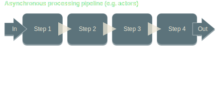 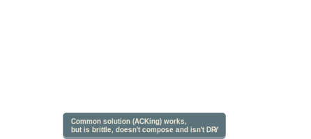Async Boundary
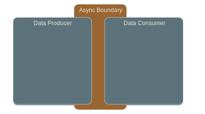 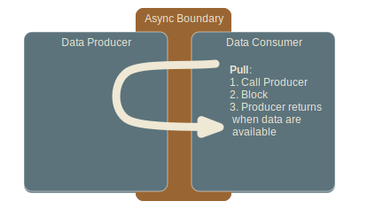 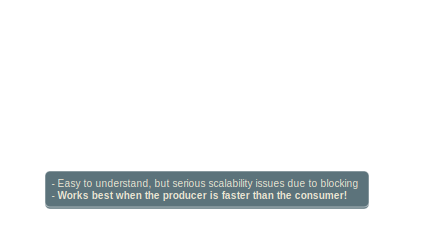 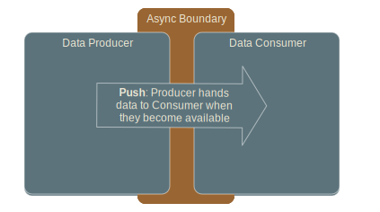 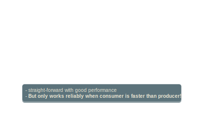 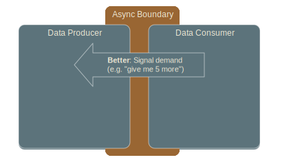 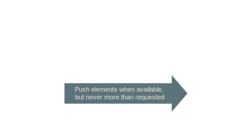 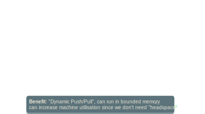Pipeline Processing Done Right
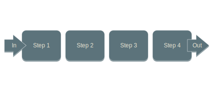Continuous Pipelines across Machines
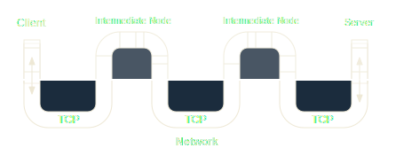Landscape
 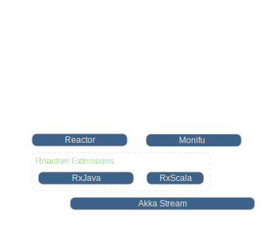 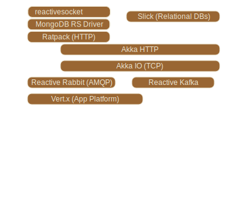AKKA-STREAM: SIMPLE STREAM EXAMPLE
Source(stockTickerPublisher) // Source[Tick]
.filter(_.symbol == "AAPL") // Source[Tick]
.buffer(100000, OverflowStrategy.DropHead) // Source[Tick]
.splitWhen(x => isNewDay(x.timeStamp)) // Source[Source[Tick]]
.headAndTail // Source[(Tick, Source[Tick])]
.map { case (head, tail) =>
head -> tail.groupedWithin(1000, 1.second)
} // Source[(Tick, Source[Seq[[Tick]]])]
.via(someFlow) // Source[RichTick]
.map(toCandleStickChartColumn) // Source[CandleStickChartColumn]
.to(candleStickChartSink) // RunnableFlow
.run() // MaterializedMap
AKKA-STREAM: FLOW GRAPH EXAMPLE
FlowGraph { implicit b ⇒
val bcast = Broadcast[T]
val merge = Merge[T]
source ~> f1 ~> bcast ~> f2 ~> merge ~> f3 ~> sink
bcast ~> f4 ~> merge
}.run()